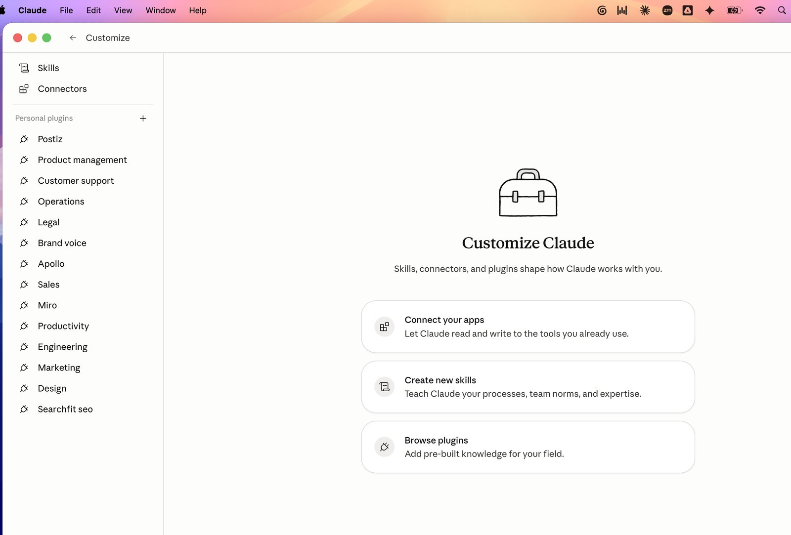
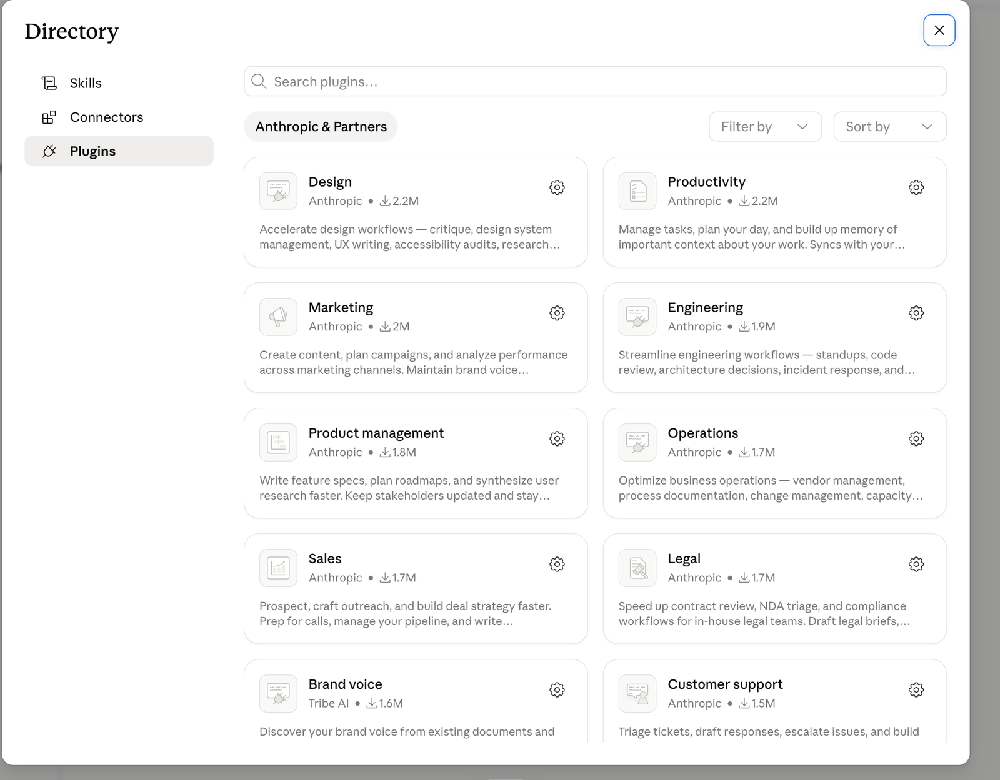
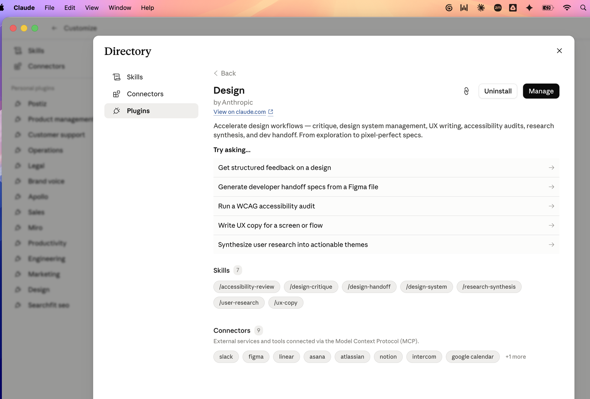

Activate a role-bundle plugin.
Five steps, real screenshots. We're using the Design plugin in this walkthrough — the exact same flow works for Sales, Marketing, Engineering, Legal, Ops, Product Management, Customer Support, or Brand Voice. Pick whichever matches your role.
Open Customize
From any Cowork window, click Customize in the left sidebar (briefcase icon, near the bottom). You'll land on the page below.

The "Customize Claude" landing page. Three cards correspond to the three ways to extend Cowork — connectors, skills, and plugins.
Click "Browse plugins"
The Directory opens to the Plugins tab, showing role bundles from Anthropic & Partners. Each card lists the publisher, install count, and a one-line description of what the bundle covers.

Ten role bundles available right now. Each one packages 5–10 skills plus recommended connectors for that job function.
Open the plugin you want
Click any plugin card to see what's inside. The detail view shows:
- ·"Try asking…" examples — sample prompts that fire each skill, so you can see what the bundle actually does.
- ·Skills chips — the slash-command names you can use to trigger each skill directly.
- ·Connectors chips — tools the plugin works best with. Not required, but the skills get richer when these are connected.

The Design plugin: 5 example prompts, 7 skills (/design-critique, /accessibility-review, and 5 more), and 9 recommended connectors (Slack, Figma, Linear, Asana, Atlassian, Notion, Intercom, Google Calendar, +1).
Hit Install
Top-right of the plugin detail view: an Install button. Click it. The plugin downloads and registers all its skills in your Cowork instance.
If you've already installed the plugin, the button reads Uninstall and a second Manage button appears next to it. Manage lets you turn individual skills on/off without uninstalling the whole bundle — useful when you want, say, 5 of the 7 Design skills but not all.
Connectors aren't auto-installed. To finish the setup, switch to the Connectors tab in the Directory and connect the tools the plugin recommends. OAuth flow per service, one minute each. Skip any you don't use.
Use it — two ways
Once installed, the plugin shows up in your left sidebar under Personal plugins, with every skill nested below it. Skills activate in two ways:
/design-critique without you naming it.
/design-handoff jumps straight into the developer handoff workflow even if your prompt was ambiguous about which skill to use. Best for when you know exactly what you want.
That's it. The plugin is live. Skills will trigger on their own from now on whenever your prompts match their patterns — no further setup needed.
.skill zip). Custom skills activate the same way as bundled ones — natural language match or slash command.